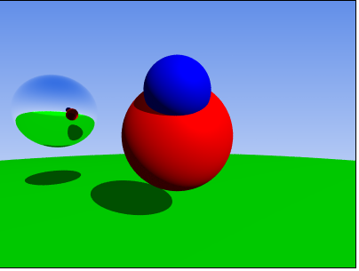

Luigi De Marco - Portfolio
Graphics Programming
Vulkan Renderer
I submitted this as the final deliverable for the Games Programming university course at DMU Leicester.
It is a rendering application which utilises the Vulkan API to render a 3D scene with PBR lighting.
The entire project, including build files and dependencies, were made from scratch.
Asteroid Belt
Starting from a highly unoptimised application,I applied the following techniques in order to drastically increase its performance. Final result showed a 5x improvement in frame time.
- Entity Component System (ECS)
- Removed redundant GPU bindings
- Deferred rendering
- Level of Detail (LOD) using MeshOptimizer
- SIMD instructions
- Broadphase collision detection
- Instanced rendering
Repository not available
Advanced Shaders Demo
Starting from a base Rendering application in OpenGL, I learned and implemented the following features.
- Shadow Mapping
- Several material and post-processing shaders
- Deferred rendering
- Noise generation applied to terrain
- Particles using compute shaders
- SSBOs
- Physically Based Rendering
Asteroid Belt
A static software raytracer built entirely on JavaScript. Please allow some time to load depending on your hardware.

Render